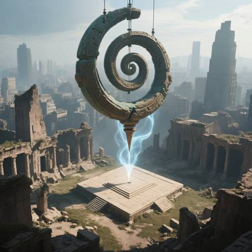
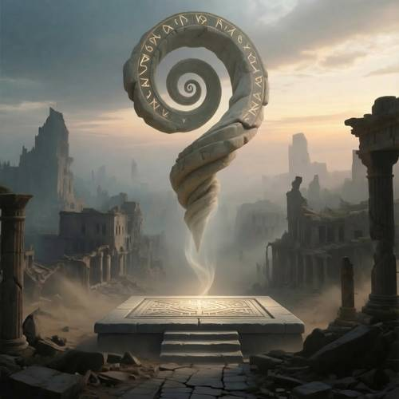
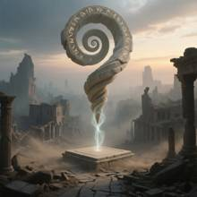
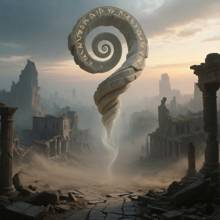

Entity Layout — A huge spiral-shaped relic was suspended above the ruins of the city,
A huge spiral-shaped relic was suspended above the ruins of the city, its tip aimed at a square altar below, and there was an invisible flow of energy between the two.

Direct — one call, no iteration

Continuum — Qwen3.8-27B + Qwen-Image
Judge — Direct
PASSEntity Layout - Three-Dimensional Space — The image depicts a large relic suspended in the air above an area of ruins, with a city in the background. The tip of this relic is pointing directly at a stone altar situated below it, matching the specified spatial arrangement.
FAILLogical Reasoning — The image shows the relic aimed at the altar with a visible flow of blue energy between them, indicating a direct connection. However, the prompt requires an "invisible" flow, implying the connection should be inferred rather than explicitly visualized. By making the energy flow visible, the image fails to correctly interpret the reasoning implied by the word "invisible".
FAILCompound - Imagination — The image successfully portrays a huge, imaginative relic suspended in the air. However, it does not depict an "invisible flow of energy"; instead, the energy is shown as a very visible stream of blue light.
FAILAction - Non-contact Interaction — The image shows a non-contact interaction in the form of an energy flow between the relic and the altar. However, this flow is depicted as a visible stream of blue, glowing energy, which contradicts the prompt's specific requirement for an "invisible" flow.
PASSAttribute - Shape — The image features a large relic that is clearly spiral-shaped. The altar below it is a stepped platform with a square top and a square base.
Judge — Continuum
PASSEntity Layout - Three-Dimensional Space — The image displays a massive relic suspended in the air. Below it are the ruins of a city, and in the foreground, there is an altar. The relic is positioned directly above the altar, with its lower tip pointing towards the altar's center.
PASSLogical Reasoning — The relic's tip is aimed directly at the altar. A visible, wispy, and luminous substance flows from the relic's tip down to the altar's surface, establishing a clear visual connection and interaction between the two objects.
PASSCompound - Imagination — The image depicts a huge stone relic floating unsupported in the sky over a ruined city and a flow of energy connecting it to an altar. These are fantastical elements that are not possible in reality.
PASSAction - Non-contact Interaction — The image shows a non-contact interaction through a visible, ethereal, smoke-like flow of energy that originates from the tip of the floating relic and descends to the center of the altar below.
PASSAttribute - Shape — The large, suspended relic is clearly depicted in a spiral shape, wide at the top and tapering to a point at the bottom. The altar below is a raised stone platform with a distinct square shape.
What the agent did
Thinking
The user is asking for an image of a huge spiral-shaped relic floating above a city's ruins, with its tip aimed at a square altar below, with an invisible flow of energy between the two. Let me think about this scene: - A huge spiral-shaped relic (floating, suspended) - Above the ruins of a city - Its tip aimed at a square altar below - "Invisible flow of energy" — interestingly, it's invisible. That is, should I not depict visible beams/energy? "Invisible flow of energy" — this is a bit of a contradiction, but I could interpret it as a subtle, barely visible shimmering energy field, or just imply it. In fact, "invisible" might mean that the energy flow is not visible to the naked eye. But as an image, I can render it as a faintly visible shimmer — a very subtle, barely perceptible energy stream. I think a faint, subtle energy connection (like a faint beam of light or shimmering particles) is the best interpretation — the prompt says "invisible," so maybe I should keep it very restrained: a faint glow connecting the two, or nothing visible. I think the best artistic interpretation is this: the spiral relic hovers, tip pointing downward at the square altar, and between them a faint, almost invisible energy flow — a faint shimmer of light, delicate and barely perceptible, not a thick beam. This keeps fidelity to "invisible" while conveying the concept. Scene: a ruined city — collapsed buildings, broken columns, rubble, maybe ancient/fantasy style. A huge spiral-shaped relic — like a giant helix/spiral structure (stone or metal), floating in the sky above the ruins. Below it, in the center of the ruins, a square altar (stone platform). Dramatic lighting, maybe dusk or with a foggy atmosphere. Let me generate with qwen-image as per the benchmark policy. Prompt: "A massive ancient spiral-shaped relic, a colossal twisted helix of weathered stone and glowing runes, floating high in the sky above a vast ruined city, its spiraling tip pointing straight down at a square stone altar set in the middle of the rubble below. Between the relic's tip and the altar a faint, barely visible shimmer of flowing energy connects them, subtle threads of light. Ruins of collapsed buildings and broken columns stretch across the horizon, fog, dramatic dusk lighting with a pale sky, cinematic epic fantasy atmosphere." I'll use qwen-image and generate at 1024x1024 (default). Actually, the size is managed by the harness, so I should use the default. Let me not specify width/height. Then inspect, then edit, then mark_best. Let's get started.
Step 1 — `generate_image`
{
"prompt": "Epic fantasy scene: a colossal ancient spiral-shaped relic, a massive twisted helix of weathered pale stone with faintly glowing runes carved along its coils, suspended high in the air above a ruined city. The relic's tapering spiral tip points straight down, aimed precisely at a square stone altar standing in the center of the rubble far below. Between the relic's tip and the altar there is only a faint, barely visible shimmer of flowing energy \u2014 delicate translucent threads of pale light, subtle and ghostly, not a solid beam. The ruined city spreads out beneath: collapsed buildings, broken columns, cracked stone streets, drifting dust and low fog. Dramatic dusk sky with soft backlight, cinematic wide composition, the spiral relic dominates the upper half of the frame.",
"model": "qwen-image"
}
Result img_0
Thinking
The image is good. Let me evaluate it against the prompt: - Huge spiral-shaped relic: ✓ — a large stone spiral with runes inscribed on it. But it's being suspended by chains/cables from above, which looks a bit odd. The prompt says "suspended above the ruins of the city" — "suspended" can mean hanging/floating. The chains from above actually kind of fit "suspended," but they look somewhat taut, and the artifact appears to be dangling from something off-frame. That's within acceptable range, arguably even a good interpretation of "suspended." However, it looks a bit like a crane hook. Hmm. Also, the spiral's form is a flat disk with a spiral carved into it, connected to a twisted column-like tail, ending in a pointed tip. That's a reasonable interpretation of a spiral-shaped relic. - Tip pointed at the square altar below: ✓ — the tip points down toward the square altar. Good. - Square altar: ✓ — there's a flat square stone platform. It's more of a low platform than a tall altar, but it's a square altar. No problem. - Invisible flow of energy between the two: The current image shows a clearly visible glowing beam/spiral of light connecting the two. The prompt says "invisible flow of energy." So the visible beam is too much. The energy should be invisible, or at best an extremely faint shimmer. The prompt explicitly says "invisible." So I should tone down the visible beam and make it an almost imperceptible faint glow. Hmm, but a completely invisible flow of energy means literally nothing visible between the two — that's difficult as an image, and the prompt's intent might be "not a solid beam but a subtle invisible flow." I think the best interpretation is this: make the connection extremely faint — a barely perceptible shimmer, a hint of pale light, or just a very subtle glow around the tip and the altar. A fully invisible energy flow would look like nothing is happening. Let me edit: change the visible glowing spiral beam to an almost invisible faint shimmer — a barely perceptible gossamer-like thread, nearly transparent. The chains: should I keep them? "Suspended" — it's plausible for the relic to be held in the air by chains, but it makes it look like it's hanging from an invisible crane, which is a bit weird for a floating artifact. The prompt says "suspended above the ruins" — in fantasy, artifacts are often shown floating. Chains from off-frame look unnatural. I think it's better to remove the chains and have it floating freely. That's a more natural reading of a floating relic. Also, the flat disk-like spiral with the tail — no problem there. Edit plan: 1. Remove the chains/cables at the top, and have the relic floating freely in the air. 2. Make the beam of light much fainter — an almost invisible, faint shimmer. I can do both in a single edit call (since they're two changes, there's a risk of leakage). The discipline says split into ordered single-entity edits when there are multiple distinct changes. Let me do two sequential edits. First edit: remove the chains. "Remove the metal chains and cables hanging from above; the spiral relic is floating freely in the air without any supports." Second edit: tone down the beam. "Make the stream of light between the relic's tip and the altar extremely faint, an almost invisible, barely perceptible gossamer-like shimmer of pale light." Then inspect, mark the best, and finish. Let me execute edit 1.
Model
The first result is strong — the spiral relic, ruined city, square altar, and downward-aimed tip are all in place. Two points to fix: the chain dangling from the top makes the relic look like it's hanging rather than floating, and the connecting beam is far too visible for the "invisible flow of energy" the prompt asks for. Let me fix these one at a time.
Step 2 — `edit_image`
{
"image": "img_0",
"prompt": "Remove the metal chains and cables hanging from the top of the image; the spiral relic floats freely in the air with no visible supports, hanging from nothing. Keep everything else exactly the same.",
"model": "qwen-image"
}
Result img_1

Thinking
Chain is deleted. The relic now floats freely. Next, fix the beam of light—it should be "invisible," i.e., an extremely faint, barely perceptible shimmer, not a clear glowing spiral beam.
Model
Chains removed — the relic now floats freely. Now I'll tone down the energy beam to a nearly invisible shimmer.
Step 3 — `edit_image`
{
"image": "img_1",
"prompt": "Make the light between the relic's tip and the altar almost invisible: replace the bright glowing spiral beam with an extremely faint, barely perceptible shimmer of pale light, a ghostly gossamer hint of energy so subtle it is nearly imperceptible, like a faint heat haze. Keep everything else exactly the same.",
"model": "qwen-image"
}
Result img_2

Thinking
The beam has become far more restrained — now it's just a faint wisp of smoke-like light between the tip and the ground. But wait: the altar seems to have disappeared! In img_1, the square altar platform was clearly visible. In img_2, the square altar is… let me look carefully. The light is drifting toward the ground, and I can see rubble, but the flat stone platform is gone. Looking at the bottom center: I can see the cracked cobblestone ground, but I don't see the raised square platform that was in img_0/img_1. Hmm, it's actually possible the altar is still there, just hidden by the mist. The wisp is hitting the ground in the same spot where the altar used to be, but the flat stone platform appears to be missing. Let me zoom in with inspect_region and check the altar area.
Model
The beam is now an almost invisible wisp, which matches "invisible flow of energy." But I need to check the square altar — it may have been lost in the edit. Let me inspect that region.
Confirmed: the square altar is gone. The tip of the relic is now just hovering above rubble/dust, with a faint smoke-like trace. The square altar platform that was visible in img_0 and img_1 has disappeared. I need to restore the square altar. Options: 1. Do an edit on img_2: "Restore a square stone altar platform at the bottom center of the frame…" — a targeted edit. 2. Go back to img_1 (which has the altar + chain removed, but a bright beam). Actually, img_1 had: chain removed ✓, altar ✓, but a bright beam ✗. img_2 has: chain removed ✓, faint energy ✓, but altar ✗. It's better to fix the altar in img_2 than to redo the beam edit on img_1 (risk of the beam becoming bright again). Let's edit img_2 to bring back the square altar at the base of the faint energy trace. Edit prompt: "At the bottom center of the frame, where the faint trace of light lands, restore a square stone altar: a flat, raised, square stone platform with a carved surface. Keep everything else, including the faint trace of light, exactly the same." Alright, let's run that.
Model
Confirmed — the square altar was lost in the previous edit; the wisp now lands on rubble. I'll restore it in img_2.
Step 5 — `edit_image`
{
"image": "img_2",
"prompt": "At the bottom center of the frame, where the faint wisp of light lands on the ground, place a raised square stone altar: a flat square stone platform, a few steps up from the ground, with a carved flat top surface. Keep the faint almost invisible wisp of light between the relic tip and the altar, and keep everything else exactly the same.",
"model": "qwen-image"
}
Result img_4
Thinking
The square altar has been restored—currently it's a raised, carved square stone platform with steps, sitting at the bottom center, with the relic's tip pointing directly at it, and a faint, almost invisible light connecting the two. No chain. Ruined city in the background. Dusk lighting. All elements of the prompt are in place: - Huge spiral-shaped relic ✓ (suspended/floating above the ruins) - Above the ruined city ✓ - Tip pointing at the square altar below ✓ - Invisible flow of energy between the two ✓ (currently a barely perceptible light) Just to be safe, let me zoom in on the altar area and check whether it's properly formed. I'll do a quick inspection.
Model
The altar is restored. Let me verify it's properly formed at source resolution.
In the cropped image, you can see a carved square altar with a spiral pattern engraved on its surface, and the relic's pointed tip hovering above it, with a faint wisp of light connecting them. The altar is well done. All elements have been confirmed: - Huge spiral-shaped relic floating in the air ✓ - Above a ruined city ✓ - Pointed tip aimed at the square altar below ✓ - Invisible (nearly imperceptible) flow of energy between the two ✓ This is a good result. Marking img_4 as the best and stopping.
Model
In the cropped image, a carved square altar with a spiral engraved on its surface is shown, the relic's tip is hovering directly above it, and they are connected by an almost invisible thin mist of light. All the elements of the prompt are in place: - **A huge spiral-shaped relic** is suspended in mid-air, floating freely above the ruins - **A ruined city** spreads out in the background, filled with collapsed buildings, broken columns, and drifting fog - **Its tip points downward**, aimed precisely at the **square altar** below - **An invisible flow of energy**: not a solid beam, but a barely perceptible shimmering light
Step 7 — `mark_best`
{
"image": "img_4",
"reason": "All prompt elements verified: huge spiral relic floating freely over ruined city, tip aimed at the square altar below, with only a faint nearly-invisible energy wisp connecting them."
}
Thinking
Complete. The marked image is img_4, which is the final version I want to return. Time to stop and tell the user.
Model
The final image is complete and marked. It shows the colossal spiral relic suspended over the ruined city, its tapering tip aimed straight down at the carved square altar, with only a ghostly, nearly invisible shimmer of energy flowing between them.